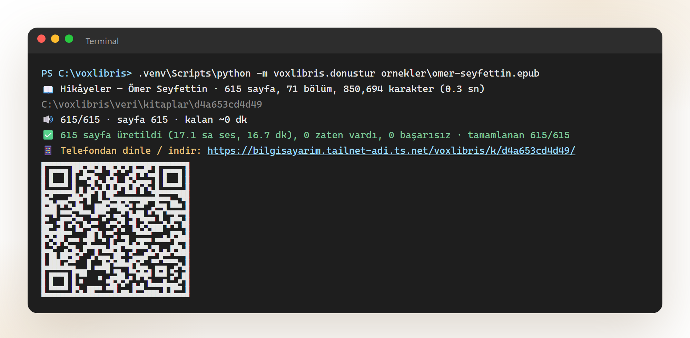
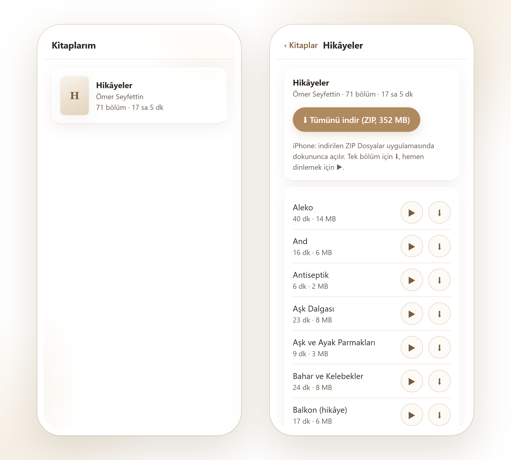

Kitapların sesi.
Kendi EPUB ve PDF kitaplarını, kendi bilgisayarında ve ücretsiz olarak Türkçe sesli kitaba çevir. Bulut yok, abonelik yok, API anahtarı yok. Kitabın metni bilgisayarından hiç çıkmaz.
Neler yapar?
Kitabı alır, metni temizler, Türkçe kurallarına göre okur ve bölüm bölüm MP3 olarak telefonuna getirir.
EPUB ve PDF
İçindekilerden ve yer imlerinden bölümler çıkarır. DRM'li ya da taranmış dosyaları açık bir mesajla reddeder.
Temiz metin
Sayfa üst/alt bilgileri, sayfa numaraları, satır sonu tirelemeleri ve dipnot rakamları ayıklanır. Metni yapay zeka değiştirmez, kurallı kod temizler.
Türkçe okunuş
"Dr.", "vb.", "19. yüzyıl", "II. Abdülhamit", "1923'te", "[ed.n.]" doğru okunur. Ekrandaki metin değişmez, sadece sesin kopyası.
Kaldığı yerden devam
Sayfa sayfa üretir. Yarıda kesersen aynı komut kaldığı sayfadan sürer. Her cümlenin sesteki zamanı kaydedilir.
Telefondan erişim
Bölümleri dinle, indir ya da tümünü ZIP olarak al. Tailscale ile internete port açmadan, sadece kendi cihazlarından.
Gizli ve ücretsiz
Her şey senin bilgisayarında olur. Metin de ses de hiçbir servise gönderilmez. Kod MIT lisanslı.
Sesler
Aynı paragraf, üç yerel Türkçe sesle. Hepsi işlemcide, saniyeler içinde üretildi.
Bir sonbahar sabahı, Ahmet Bey 1923 yılında kurulan eski konağın kapısını açtı. Dr. Selim, saat 08:30'da gelmişti; elinde %45 indirimli aldığı kitaplar vardı. — Hoş geldiniz, dedi Ahmet Bey. Konağın üçüncü katındaki kütüphanede 3.500 cilt kitap duruyordu. Prof. Ayşe Hanım bu kitapların çoğunu 19. yüzyıldan kalma sandıklardan çıkarmıştı. Sayılar, saat, yüzde, kısaltmalar ve sıra sayıları bu metinde bilerek var.
Nasıl çalışır?
Altı adımlı, tamamen yerel bir hat. Metin katmanı sadece Python standart kütüphanesiyle çalışır.
Kurulum
Python 3.10+ ve ffmpeg yeterli. Ayrıntılar ve macOS/Linux için README.
# Windows git clone https://github.com/gorkemsandikci/voxlibris.git cd voxlibris py -3.12 -m venv .venv .venv\Scripts\python -m pip install -r requirements.txt .venv\Scripts\python araclar\sesleri_indir.py # Kitabı sese çevir (bitince telefon linki ve QR kod çıkar) .venv\Scripts\python -m voxlibris.donustur kitabim.epub

